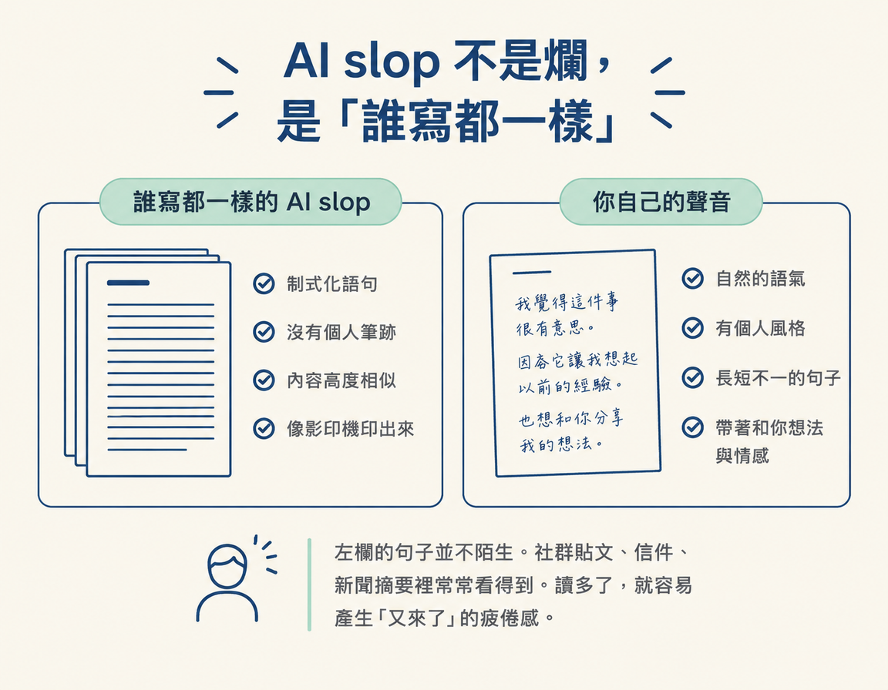
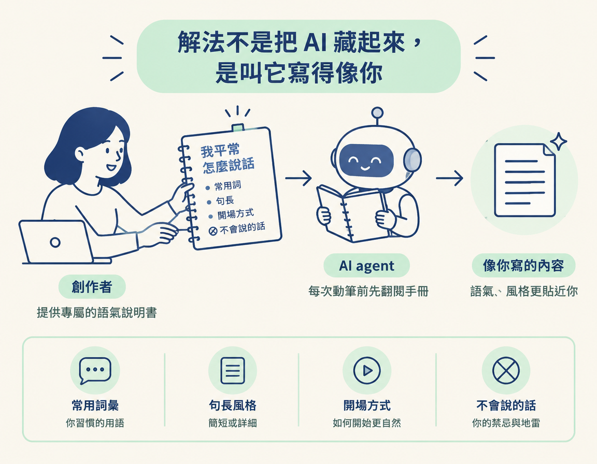

這一節是「Scripts in Your Voice」的第一步：你會先學會辨認 AI slop，理解觀眾為什麼容易看出 AI 腔、接著滑走，也會知道接下來要用什麼方法，讓 AI 學會你的聲音。
上一課，你學了 hook。Hook 是影片一開始用來抓住觀眾注意力的開場。前三秒，往往決定觀眾會不會停下來。假設你已經寫出一個吸引人的開頭，觀眾停住了，接著往下聽。
真正把人趕走的，可能是接下來的內容。觀眾聽了一分鐘，心裡忽然冒出一個念頭：「這段話好像在哪裡聽過，是不是 AI 寫的？」念頭一出現，他就滑走了。通常，他不會留言告訴你原因，只是默默離開。
所以這一節先不教你動手寫，而是先看清楚「一眼被看穿」是怎麼回事。你得先認得出 AI 味，才知道怎麼從自己的稿子裡把它拿掉。否則你可能只覺得「讀起來怪怪的」，卻說不出問題在哪裡。
課程頁面對 AI slop 的定義很短，卻說中了重點：
AI slop is writing that sounds like every other AI, and people spot it and scroll on.
簡單來說，AI slop 就是「每個 AI 寫起來都長得一樣」的文字。觀眾認出這種味道，就直接滑走。
這裡批評的不是文筆差。AI 寫的內容通常文法正確、結構完整，用詞也很得體。問題是它太平整了，像影印機印出來的字：乾淨，卻看不見筆跡。AI slop 就像文字界的印刷體，不一定有錯，但讀起來「沒有你」。
看看下面的對照，就能感受兩者的差別：
| AI slop 的徵兆 | 你自己的聲音 |
|---|---|
| 「在這個快速變化的時代，我們都應該……」 | 「我上禮拜才發現，原來我一直搞錯。」 |
| 每句話都四平八穩，長度也差不多 | 有時一句話很長，有時只丟三個字 |
| 什麼都提到一點，卻不痛不癢 | 講自己真的踩過的坑、真的做過的事 |
| 誰來寫都一樣，換個名字也不違和 | 換成別人來講就不對味，因為那是你的口氣 |
左欄的句子並不陌生。社群貼文、信件、新聞摘要裡常常看得到。讀多了，就容易產生「又來了」的疲倦感。

講師指出一個正在發生的變化：AI 愈普遍，觀眾就愈容易從文案和腳本裡，認出 ChatGPT 常見的寫法。
這就像廣告詞。十年前，你可能還會被一句行銷話術打動，現在一看到，就知道那是話術，因為早已看過好幾千遍。觀眾辨認 AI 腔也是同樣的道理：看過的 AI 文字愈多，就愈熟悉那些常見句型，辨識力也會愈來愈高。
對創作者來說，被觀眾認為「這個人的腳本聽起來像 AI 寫的」，代價可能比想像中大。課程一開始就提醒：最不希望發生的事，就是觀眾把你看成一個唸著 AI 稿的創作者。內容能累積觀眾，靠的是信任，一旦觀眾覺得你只是在唸機器生成的文字，信任就會開始鬆動。
你可能會想：「那我不要用 AI 寫稿，自己寫就好。」但講師選擇的是另一條路，這也是整個模組的重點。
課程要建立的是一套可以重複使用的 skill 和 workflow，讓 AI「從你自己的語氣裡學習」（a repeatable skill and a repeatable workflow that actually learns from your own tone of voice）。換句話說，目標不是把 AI 藏起來，而是讓 AI 寫出來的內容讀起來像你。
這個轉變很重要，因為它改變了你要解決的問題。原本是「怎麼讓稿子看不出是 AI 寫的」，那是在補救。現在則是「怎麼讓 AI 學會我怎麼說話」，那是在建立一份能持續累積的資產。
這份資產就是 /tone。課程頁面用這句話說明它的作用：
So teach your agent how you sound with /tone, a skill it reads every time it writes for you.
/tone 是一份 agent 每次替你寫東西之前都會先讀的檔案。想像你長期請一位代筆者幫忙寫稿，你會給對方一本「我平常怎麼說話」的說明書，裡面記著你常用哪些詞、句子大約多長、通常怎麼開場，以及你從不會說什麼。這樣寫出來的內容才有機會像你。/tone 就是這本給 AI 看的說明書。

把前後兩個概念連起來看：hook 負責讓觀眾停下來，/tone 負責讓觀眾停下來之後，感覺這段話像你。前者影響觀眾會不會注意你，後者影響他們能不能繼續信任你。兩者都顧到，腳本才有機會讓觀眾願意看下去。
所以，AI slop 不只是 YouTuber 的審美問題，也關係到內容能不能累積信任。解法不是等靈感出現，而是建立一份能持續使用、也會愈來愈貼近你聲音的檔案。下一步，我們就來把它建出來。
AI slop 是「每個 AI 寫起來都一樣」的文字：文法正確、結構完整，卻沒有你的筆跡。AI 愈普及，觀眾愈容易認出這種味道，如果他們覺得你只是在唸 AI 稿，信任就會受影響。解法不是把 AI 藏起來，而是建立一份能讓它學習你語氣的 skill，也就是 /tone。這份「我怎麼說話」的說明書，會在 agent 每次替你動筆前先被讀取。
認得出 AI 味之後，下一步就是動手建立 /tone。如果你平常已經常和 agent 聊天，只要一句指令，它就能從你們的對話裡整理出你的聲音。